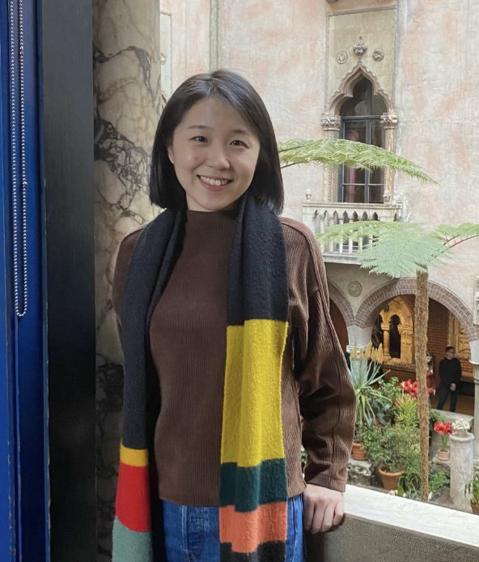

Jian Cui
PhD student, Harvard Linguistics
Email: jiancui@fas.harvard.edu
CV: here

Research interests:
- Phonology
- Tonology [Grammatical tone]
- Morphology
- Morphology-phonology interface
- First language acquisition [Word segmentation, Tonal acquisition, International adoptees]
- Syntax [Voice and argument structure]
Academic history
- (2022-now) Ph.D. in Linguistics, Harvard University
- (2020-2022) MPhil. in Linguistics, Philology and Phonetics, University of Oxford
- (2015-2019) B.A., Southwest University (Major in English)
Affliations:
Publications
- [Upcoming] Cui, J & Rabinovitch, J. To appear. "Two Voices Calling Out as One: A Split Voice Analysis of Javanese Passives". Proceedings of the Annual Meeting of LSA 2024.
- [Upcoming] Cui, J & Rabinovitch, J. To appear. "Indices in the Voice Domain: A Unified Analysis of Javanese Passives". Proceedings of AFLA 30.
Projects:
- Front-back Asymmetry in Bantu Vowel Harmony
- (May 2023) Front-back Asymmetry in Bantu Vowel Harmony: Representations and Constraints.
The 30th Manchester Phonology Meeting (MfM). Talk
- (Oct 2023) Front-back Asymmetry in Bantu Vowel Harmony: An Instance of Coronal Asymmetry.
MorrisHalle@100. Massachusetts Institute of Technology. Poster
- Morpho-syntax of Javanese passives
- (Oct 2023) Indices in the Voice Domain: A Unified Analysis of Javanese Passives.
30th Meeting of the Austronesian Formal Linguistics Association (AFLA). Talk. With Jack Rabinovitch
- (Jan 2024) Two Voices Calling Out as One: A Split Voice Analysis of Javanese Passives.
LSA Annual meeting 2024. Talk. With Jack Rabinovitch
- Focus on Demonstratives: Experiments in Mandarin Chinese [Collaborative project with Ankana Saha, Yağmur Sağ, and Prof. Kathryn Davidson]
- (April 2024) Mandarin demonstratives as strong definites.
SALT 34. Poster.
- (June 2024) Mandarin demonstratives as strong definites: An experimental investigation.
Experiments in Linguistic Meaning (ELM) 2024. Talk.
Latest update: Feb 2024